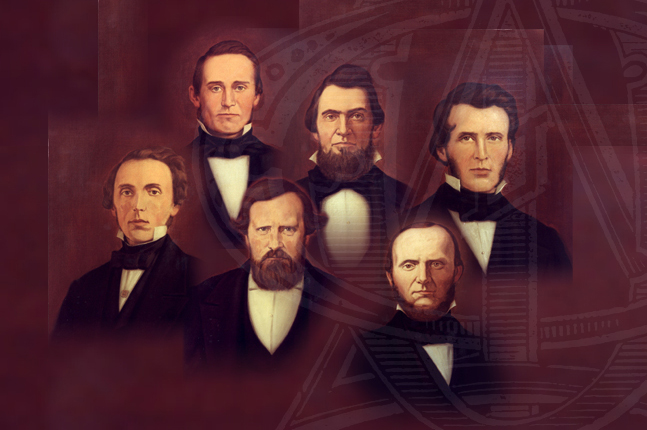
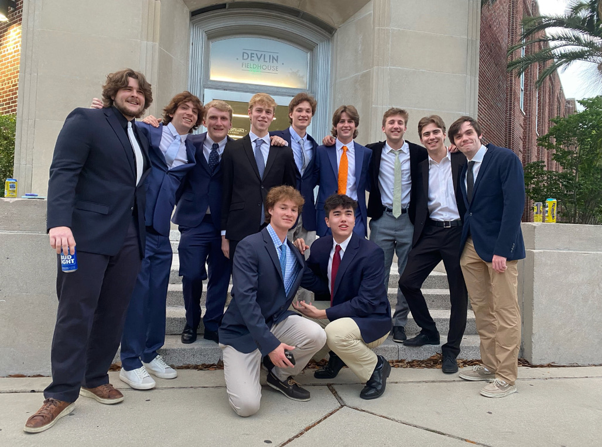
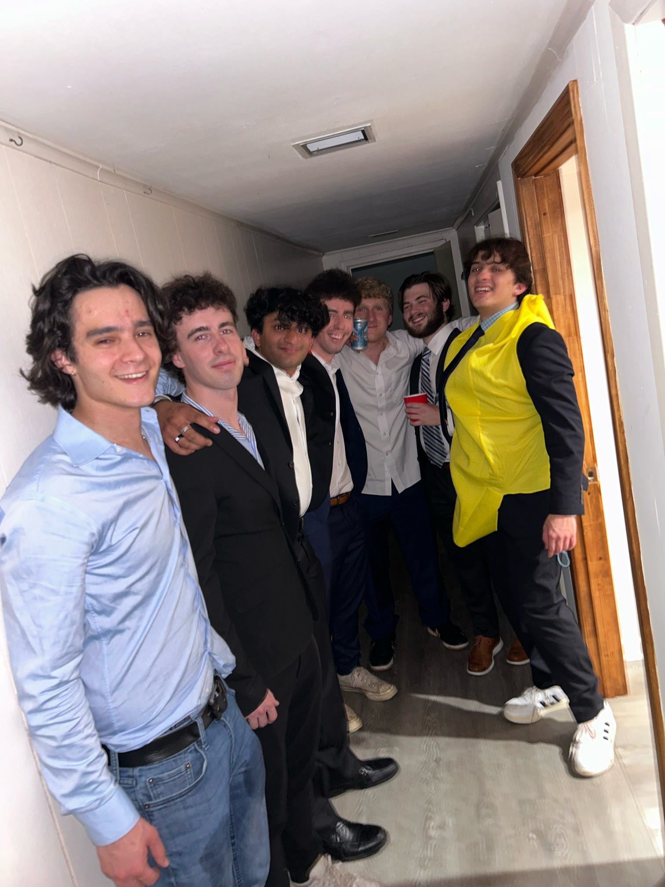

Founded in 1848 by a visionary group called the Immortal Six, Phi Delta Theta has long been known for thinking differently about what it means to be a Greek organization and its impact on the greater society. Phi Delta Theta has remained faithful to its original Cardinal Principles while also evoking a culture of innovation and fearlessness, pursuing greatness in the lifelong journey of members. Helping every individual to meet his true potential is the bedrock of the Phi Delta Theta Fraternity. By celebrating each person’s true self, and by learning from each other’s strengths while helping to improve each other’s weaknesses, every member of Phi Delta Theta develops into a greater version of himself than he could ever on his own.

Social
Social events are the heartbeat of a strong fraternity. Louisiana Alpha maintains a robust social calendar full of vibrant events and fun opportunities for networking. Social events help us strengthen our brotherhood, foster growth, and create a strong sense of belonging.
Louisiana Alpha has a number of social events throughout the school year including date parties, barbecues, and other community events, and a formal every semester. In addition, every Mardi Gras, the brothers camp out on St. Charles and host a parade viewing area for the chapter and its guests. The memories we make at these events help shape the bond that creates Phi Delta Theta’s unique brotherhood.
